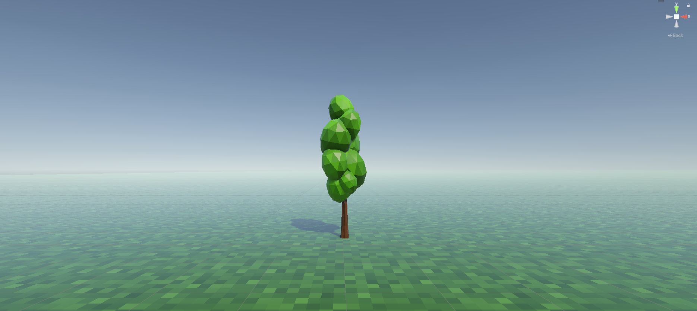
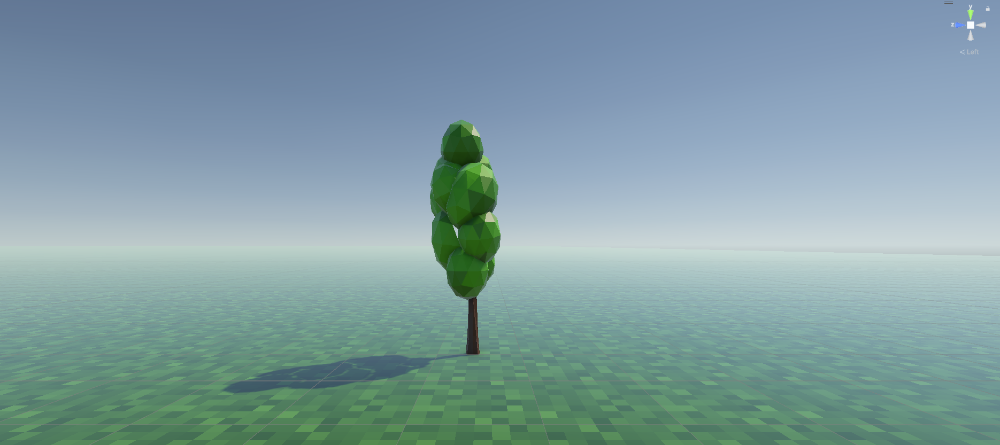
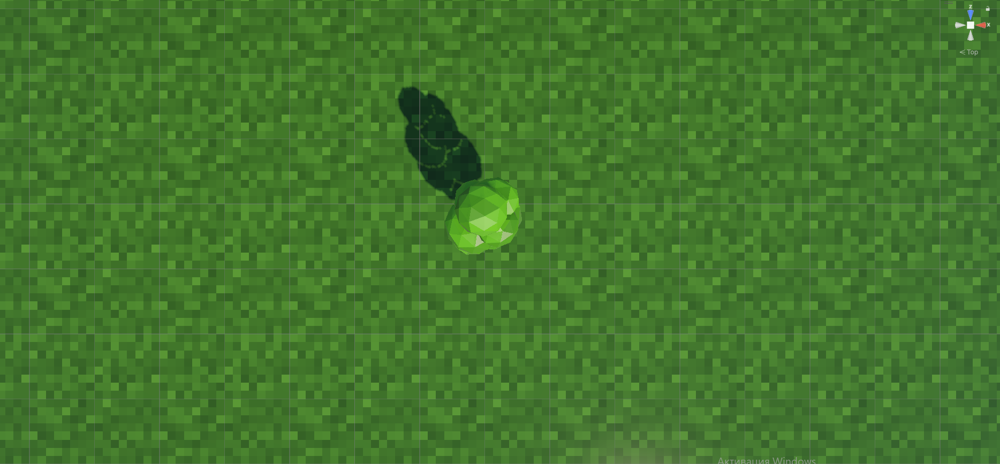

LowPoly Дерево .rig, .fbx
Главное преимущество: Дерево очень легко поддаётся анимации. Оно оснащено костями (Rigged) для хорошей анимации.
Модель с готовыми костями (Rigged). Очень легко анимировать/настраивать модель
Текстура для дерева. Можно легко изменить
Пошаговая инструкция по установке




✅ 3 шага, чтобы дерево оживилось
-
1
Импорт
Перетащи файлы LowPolyTree.fbx и Texture.png из архива в окно Project в Unity.
-
2
Накидывание текстур
Перетащи Texture.png из Project на само дерево. Ты увидишь готовое к использованию дерево.
-
3
Оживление
1. Разверни всю модель.
2. Найди нужную кость.
3. Играйся с настройками через Rotate!
⚠️ Чек-лист: если что-то не работает
Текстура не наложилась правильно.
Возможно, необходимо изменить текстуру. Переделай её под свои нужды!
Модель не реагирует на движение костей.
Дело, возможно, в вашем вмешательстве. В тестах модель вела себя правильно.